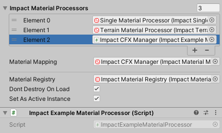

Custom Objects
Creating a custom Impact Object may be required if the built-in objects do not meet the needs of your project. For instance, you may require that an object have different Impact Materials based on the vertex color of its mesh, a case that is not handled by the built-in Impact Objects. Creating custom Impact Objects is very open-ended, and there is no one required way that you should implement a custom object.
For comprehensive documentation of the entire Impact CFX API, please refer to the API Reference.
Creating an Impact Object Component
The first step in creating a custom Impact Object is to create a new script for it. This script must implement the IImpactObject interface and its methods:
- int GetID() - Gets a unique identifier for this object that is used to generate unique contact point IDs. Using GetInstanceID() is a good choice for this.
- int GetPriority() - Gets the priority of the object for potentially stealing effects from objects with a lower priority.
- RigidbodyData GetRigidbodyData() - Gets information about this object's velocity and center of mass. Even static objects must implement this, but they can simply give a velocity of 0. This is called when the object is being queued for collision processing.
- GameObject GetGameObject() - Gets the game object assoicated with this object.
- Vector3 GetContactPointRelativePosition(Vector3 point) - Converts the given contact point into local space coordinates.
Directly implementing the IImpactObject interface is not strictly necessary, but there are a few built-in base classes that you can inherit from if you wish:
- ImpactObjectBase - The most basic Impact Object with a few of the IImpactObject interface methods already implemented.
- ImpactObjectSingleMaterial - Supports an object with only 1 material. By default these kinds of objects are considered static.
- ImpactObjectRigidbody - Supports an object with a Rigidbody or Rigidbody2D. This class inherits from ImpactObjectSingleMaterial.
Inheriting from at least an ImpactObjectBase is required if you want to be able assign your object to the built-in triggers.
Example Impact Object Script
The following example gives a basic implementation of a component implementing IImpactObject:
using ImpactCFX;
using UnityEngine;
//Implementing via the IImpactObject interface.
public class ImpactExampleObject : MonoBehaviour, IImpactObject
{
//Inspector field for the Rigidbody component.
public Rigidbody Rigidbody;
//Inspector field for the Impact Material associated with this object.
//This will be used later.
public ImpactMaterialAuthoring Material;
//Hold the state of the rigidbody from the previous FixedUpdate.
//Many velocity calculation methods require this.
private RigidbodyStateData previousRigidbodyState;
public int GetID()
{
//Use this script's instance ID as a unique ID.
return this.GetInstanceID();
}
public GameObject GetGameObject()
{
//Simply return this gameobject.
return this.gameObject;
}
public int GetPriority()
{
//Hardcoding a priority for example purposes.
return 1;
}
public Vector3 GetContactPointRelativePosition(Vector3 point)
{
//Use Unity's built-in function for calculating the local point.
return transform.InverseTransformPoint(point);
}
private void FixedUpdate()
{
//Update the state of the rigidbody.
previousRigidbodyState = new RigidbodyStateData(Rigidbody.velocity, Rigidbody.angularVelocity, Rigidbody.worldCenterOfMass);
}
public RigidbodyData GetRigidbodyData()
{
//Get the current state of the rigidbody.
RigidbodyStateData currentRigidbodyState = new RigidbodyStateData(Rigidbody.velocity, Rigidbody.angularVelocity, Rigidbody.worldCenterOfMass);
//Return RigidbodyData with both the previous and current state.
return new RigidbodyData(previousRigidbodyState, currentRigidbodyState);
}
}
Impact Material Processors
The final step in creating a custom Impact Object is probably the most difficult. While the Impact CFX system can get most of the data it needs directly from the IImpactObject itself, it cannot get the Impact Material data directly. Some objects, like terrains, require non-trivial processing in order to determine the Impact Material(s) present at a given contact point, so there needs to be a system in place to efficiently gather these materials.
This is where Impact Material Processors come in. Impact Material Processors are responsible for obtaining material information at contact points for specific kinds of objects in bulk. Impact Single Material Processor and Impact Terrain Material Processor are the two built-in Impact Material Processors, responsible for handling Impact Single Material and Impact Terrain objects, respectively.
To create a custom Impact Material Processor, you need to create a script that inherits from ImpactMaterialProcessorBase and implements the required functions:
- QueueObject - Queues an object for material processing. The impact object could be of any type, so it is important to check the type before proceeding. The resultArrayChunk parameter is very important here; it defines the range of the material results array that has been assigned to this object. The actual code here will depend entirely on your use case.
- ScheduleProcessorJobs - Schedules all jobs needed to get the material data. The materialCompositionArray parameter is very important; this is where you should put the materials you retrieved from the object.
- ResetProcessor - Resets data at the end of a fixed update step, if needed
Example Impact Material Processor Script
The following example gives a skeleton of a component implementing ImpactMaterialProcessorBase, using the example object from above:
using ImpactCFX;
using Unity.Collections;
using Unity.Jobs;
public class ImpactExampleMaterialProcessor : ImpactMaterialProcessorBase
{
public override void QueueObject(
IImpactObject impactObject,
ImpactContactPoint contactPoint,
ArrayChunk resultArrayChunk)
{
//Make sure to check the type before proceeding
if (impactObject is ImpactExampleObject exampleObject)
{
//Write code needed to queue up the object for processing.
}
}
public override JobHandle ScheduleProcessorJobs(
NativeArray materialCompositionArray,
NativeHashMap materialDataMap,
JobHandle dependencies)
{
//Write code needed to schedule jobs or otherwise process all of the objects that were queued.
return new JobHandle();
}
public override void ResetProcessor()
{
//Reset any data if needed.
}
}
Even a simple example of an Impact Material Processor is quite complex and open-ended, so your best bet is to examine the Impact Single Material Processor and Impact Terrain Material Processor for reference on how you may want to implement your processor.
Once you have your custom Impact Material Processor, all you need to do is add it as a component to an object and assign it to the Impact Material Processors list on the Impact CFX Manager.